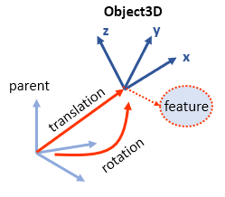
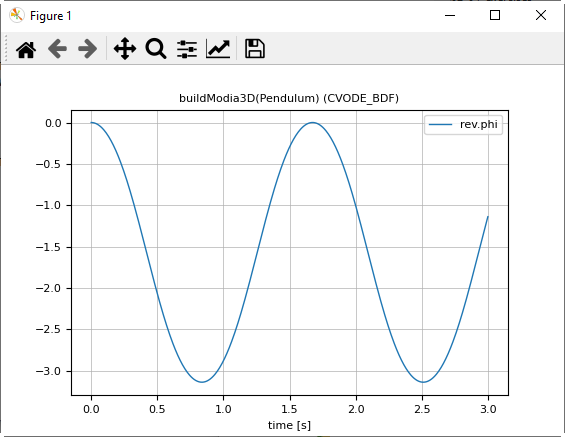
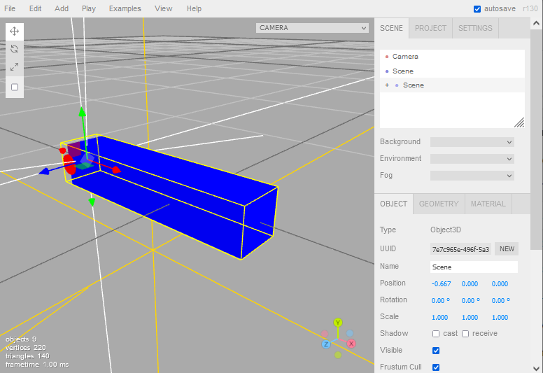
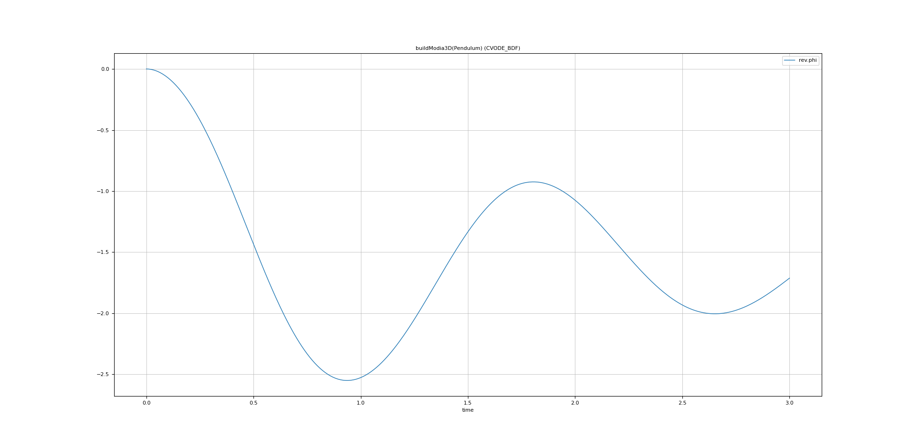

Getting Started
An Object3D constructor is the core element of Modia3D. It defines a coordinate system moving in 3D together with associated features like Scene, Visual and Solid:

1. Pendulum
In the following example a simple pendulum is defined (this is a copy of $(Modia3D.path)/test/Tutorial/Pendulum1.jl):
module Pendulum1
using Modia
Pendulum = Model(
world = Object3D(feature=Scene()),
body = Object3D(feature=Solid(massProperties=MassProperties(mass=1.0))),
bodyFrame = Object3D(parent=:body, translation=[-0.5, 0.0, 0.0]),
rev = Revolute(obj1=:world, obj2=:bodyFrame)
)
pendulum = @instantiateModel(buildModia3D(Pendulum), unitless=true)
simulate!(pendulum, stopTime=3.0)
@usingModiaPlot # use the plot package defined by ENV["MODIA_PLOT"]
plot(pendulum, "rev.phi")
endThe world Object3D has feature Scene and is therefore the inertial system. The body Object3D is a Solid and defines the pendulum as a mass point with mass = 1.0. The bodyFrame Object3D defines a coordinate system on the body that is translated along the x-axis. A revolute joint connects world with bodyFrame.
With command buildModia3D(Pendulum), the model definition is inspected and a few lines of code included, in order that joint variables are communicated between the Modia equations and the Modia3D multibody program. Keyword unitless=true defines that code generation is performed without units (because Modia3D does not yet fully support units in all components).
The commands above generate an instance of the model, simulate it and generate the following plot:

2. Pendulum with Animation
The Object3Ds of the first example are extended with Visual and Solid features in order that the pendulum parts are visualized and exported for offline animation by defining animationFile = "Pendulum2.json" in Scene. The first Object3D obj1 is defined as a solid Box with "Blue"color and its Solid material is made of "Steel". Mass, center of mass and inertia tensor are computed from Steel density and from the Box shape. The second Object3D obj2 is a visual red Cylinder that is used to visualize the axis of the revolute joint.
module Pendulum2
using Modia
Pendulum = Model(
world = Object3D(feature=Scene(animationFile="Pendulum2.json")),
obj1 = Object3D(feature=Solid(shape=Box(lengthX=1.0, lengthY=0.2, lengthZ=0.2),
solidMaterial="Steel", visualMaterial=VisualMaterial(color="Blue"))),
obj2 = Object3D(parent=:obj1, feature=Visual(shape=Cylinder(diameter=0.1, length=0.21),
visualMaterial=VisualMaterial(color="Red")), translation=[-0.5, 0.0, 0.0]),
rev = Revolute(obj1=:world, obj2=:obj2)
)
pendulum = @instantiateModel(buildModia3D(Pendulum), unitless=true)
simulate!(pendulum, stopTime=3.0)
@usingModiaPlot
plot(pendulum, "rev.phi")
endOpen https://threejs.org/editor/, import the json file (File –> Import) and inspect the model in threejs:

Export the animation in glb format (File –> Export GLB) and use an glb/glTF-viewer to inspect the animation (for example the 3D-Viewer of Windows 10).
3. Pendulum with Modia equations
The pendulum model from the previous section is extended with a damper that is defined with Modia language components and models the damping (sliding friction) in the revolute joint. In order that this is possible, a RevoluteWithFlange joints has to be used that provides a Flange connector to which a rotational 1-dim. Flange of Modia can be connected. This flange and the Damper, and the Fixed component are defined in a small Modia model library that is included viainclude("$(Modia.path)/models/AllModels.jl").
module Pendulum3
using Modia
import Modia3D
using Modia3D.ModiaInterface
# Modia Modia equation-based models
include("$(Modia.modelsPath)/AllModels.jl")
Pendulum = Model(
world = Object3D(feature=Scene(animationFile="Pendulum3.json")),
obj1 = Object3D(feature=Solid(shape=Box(lengthX=1.0, lengthY=0.2, lengthZ=0.2),
solidMaterial="Steel", visualMaterial=VisualMaterial(color="Blue"))),
obj2 = Object3D(parent=:obj1, feature=Visual(shape=Cylinder(diameter=0.1, length=0.21),
visualMaterial=VisualMaterial(color="Red")), translation=[-0.5, 0.0, 0.0]),
rev = RevoluteWithFlange(obj1=:world, obj2=:obj2),
# combine equation based modeling with 3D models
damper = Damper | Map(d=100.0),
fixed = Fixed,
connect = :[(damper.flange_b, rev.flange),
(damper.flange_a, fixed.flange)]
)
pendulum = @instantiateModel(buildModia3D(Pendulum), unitless=true)
simulate!(pendulum, stopTime=3.0)
@usingModiaPlot
plot(pendulum, "rev.phi")
endThe commands above generate an instance of the model, simulate it and generate the following plot:

4. Example and Test Models
All examples of this tutorial are stored in $(Modia3D.path)/test/Tutorial.
import Modia3D
include("$(Modia3D.path)/test/Tutorial/Pendulum1.jl")
include("$(Modia3D.path)/test/Tutorial/Pendulum2.jl")
include("$(Modia3D.path)/test/Tutorial/Pendulum3.jl")
include("$(Modia3D.path)/test/Collision/NewtonsCradle.jl")To run all tests, execute:
import Modia3D
include("$(Modia3D.path)/test/runtests.jl")